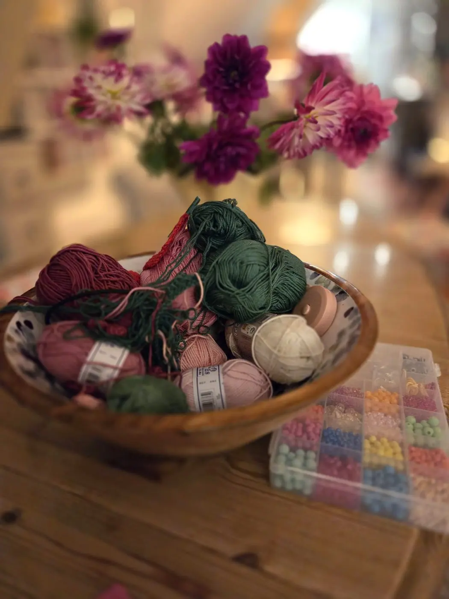
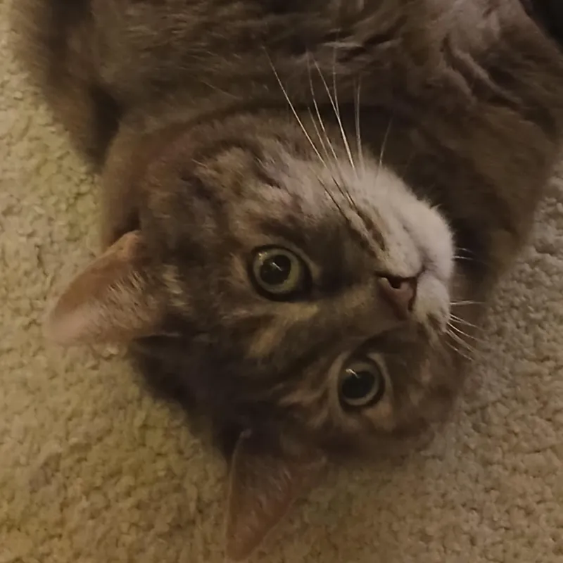

Catherine, derrière chaque maille
J'ai passé ma vie d'infirmière au service des autres. Prendre soin des gens, c'était mon métier. Aujourd'hui, c'est un peu pareil avec le crochet : je fabrique de petites choses pour apporter de la douceur.
Je crochète depuis seulement deux ans, mais c'est devenu une vraie passion depuis ma retraite. La nature est ma première source d'inspiration : les fleurs, les feuilles, les couleurs du jardin.
Faire plaisir, et partager
Au début, je crochetais avant tout pour faire plaisir à mes proches. Leurs sourires m'ont donné envie d'aller plus loin.
Je souhaite aujourd'hui partager mon travail plus largement, et permettre à d'autres personnes de faire plaisir à leur tour grâce à mes créations : une tulipe pour une amie, un marque-page pour un lecteur passionné.
Découvrir mes tulipes
La nature est ma plus belle source d'inspiration.

Voici Millie
Millie, le chat de la maison, est la mascotte de l'atelier : tigrée gris, avec de grands yeux ronds et toujours très curieuse. Elle garde un œil sur chaque pelote et ne rate jamais une séance de crochet.
Un petit secret. Essayez de taper son nom dans la zone « Code promo » de votre panier : Millie réserve un cadeau à ceux qui la connaissent. Aller au panier